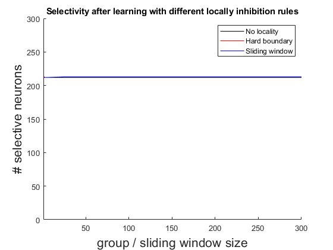

Script to locality of inhibition of Option D: image moments
We compare how different locality of inhibition results in different number of selective neurons. We check as well the difference between having a hard boundary vs window locality.
rng(3)
We show that neither of them perform much better than global inhibition
We use normal activation instead of inhibitory convergence for activation
Contents
Prepare enviroment
clear close all rng(3) path(path,'MatFunc/Vision') path(path,'MatFunc/Simulate') path(path,'MatFunc/Misc')
Read data
signa = 400; % radius signature steps (moments) FLDR = 'Images/MomTrain'; Figures = {'One','Two','Three','Four','Triangle','Square'}; PlotFLG = true; figure('color','w','position',[100 100 900 900]) [mom, class] = ImportImagesEvalMoments(FLDR, Figures, signa, PlotFLG); s = mom; [n,~] = size(s); s = sqrt(3/n)*(s - mean(s))./std(s);
Do simulations with haard boundary and sliding window
M = 300; % number of neurons in the selective layer Tmax = 400; % max integration time Th = 0.8; % selective threshold h = 0.0025; % time step (better to decrease) d = 150; % inhibitory coupling [n,L] = size(mom); % dimension and number of stimuli f = @(t) mod(round(2*t),L)+1; % function defining the stimulus sequence alpha = 20; psl = 0.975; % selective probability delta = sqrt(1 - (2*norminv(psl) / sqrt(5*n))); b2 = (Th/delta)^2; % beta^2 % Set and train the sensory layer with locality W0 = 2*rand(n,M) - 1; % random neurons [~,id] = sort(sum(s'*W0 > Th)); % sort neurons for convenience W0 = W0(:,id); karr = [300, 150, 100, 50, 25, 3, 2, 1]; i = 1; Sel = zeros(1,length(karr)); SelHard = zeros(1,length(karr)); for k = karr loc = M/k; % locality of inhibition % Sliding window W = SimulateNeurons4Loc(Tmax, h, W0, s, f, alpha, b2, Th, d, loc); Resp = s'*W > Th; R = sum(Resp,1); Sel(i) = sum(R==1); % Hard boundary W2 = SimulateNeurons4LocHard(Tmax, h, W0, s, f, alpha, b2, Th, d, loc); Resp2 = s'*W2 > Th; R2 = sum(Resp2,1); SelHard(i) = sum(R2==1); i = i+1; end
Do simulation without locality
W3 = SimulateNeurons4(Tmax, h, W0, s, f, alpha, b2, Th, d); Resp3 = s'*W3 > Th; R3 = sum(Resp3,1); SelNoLoc = sum(R3==1);
Plot results
figure; hold on plot(karr, ones(size(karr))*SelNoLoc,'k'); plot(karr,Sel,'r'); plot(karr,SelHard,'b'); ylim([0 300]) xlim([1 300]) title('Selectivity after learning with different locally inhibition rules') xlabel('group / sliding window size','FontSize',16) ylabel('# selective neurons','FontSize',16) legend('No locality','Hard boundary','Sliding window')